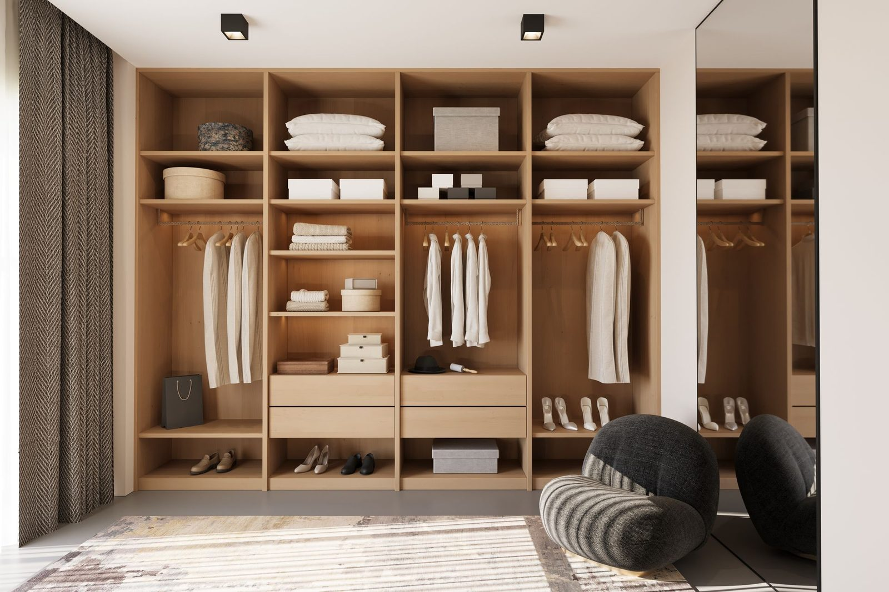
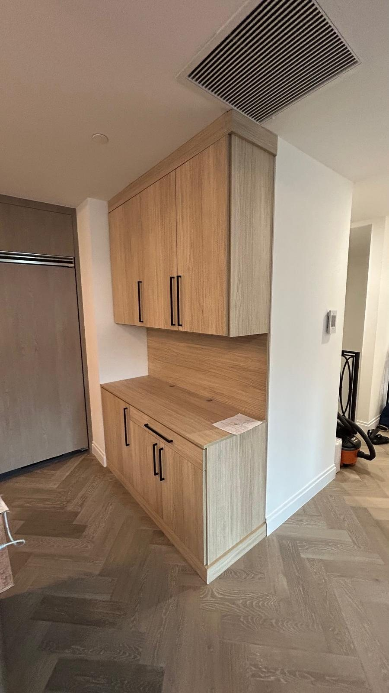

Wire shelving fails for one reason
Point loading. A wire shelf supports your clothes on a handful of thin steel rods, so everything soft that sits on it gets creased into stripes, and anything small falls through. It is also almost impossible to clean. It is cheap, it is fast, and it is why you are reading this.
Thermally fused laminate is what commercial casework uses
Our panels are a three-quarter-inch engineered core with a melamine surface fused under heat and pressure. It is the same material specification used in commercial office casework, for three unglamorous reasons: it does not chip at the edge when banded properly, it does not absorb a spill, and it does not need refinishing in five years.
It is also dimensionally stable, which matters more than it sounds. Solid wood moves with humidity, and in South Florida, a lot. A solid wood shelf cut to fit in February can bind in August.
Where solid wood genuinely wins
- Exposed edges you will touch daily, like an island countertop lip.
- Anything that needs to be shaped, curved or moulded.
- Spans you want to push past 36 inches with a thicker section.
For the carcass of a closet, it is a worse material at a higher price. We will quote it if you want it. We will also tell you this first.

The part nobody asks about: edgebanding
A panel is only as good as its edges. Every exposed edge on our work gets matching banding applied under heat, so the core is sealed. Unbanded or peel-and-stick edges are the single most common corner cut, and the first place a closet shows its age. The edge swells, lifts, and then catches on clothes.
When you compare quotes, ask whether every exposed edge is banded, including the backs of vertical panels you can see when the doors are open.
What thermally fused laminate actually is
The name does the material no favours, which is a shame, because it describes exactly what happens. A decorative paper is impregnated with resin, laid on a furniture-grade core, and then pressed onto it under heat until the resin cures and the paper and the board become one piece. It is not a veneer glued on afterwards and it is not a film wrapped round the edges. There is no glue line to fail because there is no glue.
That is why commercial casework, from offices and labs to hospitals and school lockers, is built from it. It takes abrasion, it takes cleaning products, it does not need refinishing, and it costs a fraction of what solid timber costs to achieve the same flatness over a large panel.
| Material | Where it genuinely wins, and where it does not |
|---|---|
| TFL melamine | Flat, stable, cleanable, consistent color across a whole room, 79 decors. Chips if you hit an edge hard with something harder. Cannot be refinished. |
| Plywood | Holds a screw better in a thin edge and takes a knock without chipping. But it cups, the face veneer is thin enough to sand through, and every sheet is a slightly different color. |
| Solid timber | Beautiful, and the right answer for a door or a face frame. Wrong for a 30-inch shelf, because it moves with the seasons and a glued-up panel that wide will cup. |
| Wire | Cheap, ventilated, and fast to fit. Everything falls through it, nothing stacks on it, and the brackets are into drywall anchors rather than studs. |

The edge is where the money shows
You can tell a good closet from a cheap one by looking at an edge nobody was supposed to look at. The back edge of a shelf. The underside of a partition. The inside of a drawer opening.
Every exposed edge of ours is banded, matched to the decor, and the band is applied with the edge trimmed and buffed rather than left with a lip you can catch a fingernail on. An unbanded edge is raw core, and raw core drinks moisture. The first time someone puts a damp towel on an unbanded linen shelf, the board swells and the swelling never goes back down.
The test, if you are comparing quotes: ask whether every exposed edge is banded or just the fronts. Banding only the fronts is cheaper and it is what most of the market does, and it is the difference between cabinetry that is still flat in ten years and cabinetry that is not.
Why wire fails, specifically
Wire shelving is not badly made. It is made for a different job than the one it usually gets given. It is a ventilated rack, so it is genuinely good in an airing cupboard and genuinely good over a radiator. In a wardrobe it has three problems and they compound.
- Nothing sits flat. Folded knitwear falls between the wires, small things tip over, and anything soft comes out with lines pressed into it.
- It is coated steel. The coating is thin and once it is nicked, the wire underneath rusts and the rust marks whatever is sitting on it. In a humid coastal house this happens within a couple of years.
- It hangs off the drywall. Not the studs. Plastic anchors and a clip, carrying a full rail of winter coats, into a half-inch sheet of gypsum. That is why the failure is sudden rather than gradual.
A built system puts its weight into framing through a cleat. That is the actual engineering difference, and it is the reason a system costs what it costs. How we mount it is worth reading if you want the detail.